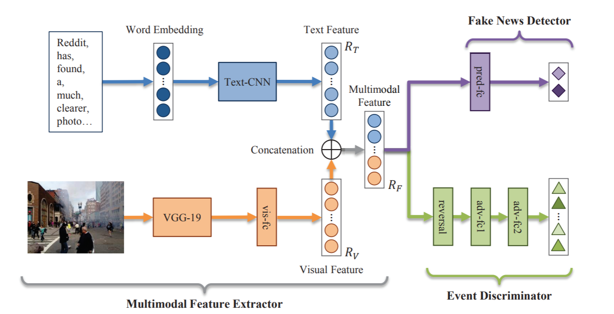

EANN
Introduction
Title: EANN: Event Adversarial Neural Networks for Multi-Modal Fake News Detection
Authors: Yaqing Wang, Fenglong Ma, Zhiwei Jin, Ye Yuan, Guangxu Xun, Kishlay Jha, Lu Su, Jing Gao
Abstract: As news reading on social media becomes more and more popular, fake news becomes a major issue concerning the public and government. The fake news can take advantage of multimedia content to mislead readers and get dissemination, which can cause negative effects or even manipulate the public events. One of the unique challenges for fake news detection on social media is how to identify fake news on newly emerged events. Unfortunately, most of the existing approaches can hardly handle this challenge, since they tend to learn event-specific features that can not be transferred to unseen events. In order to address this issue, we propose an end-to-end framework named Event Adversarial Neural Network (EANN), which can derive event-invariant features and thus benefit the detection of fake news on newly arrived events. It consists of three main components: the multi-modal feature extractor, the fake news detector, and the event discriminator. The multi-modal feature extractor is responsible for extracting the textual and visual features from posts. It cooperates with the fake news detector to learn the discriminable representation for the detection of fake news. The role of event discriminator is to remove the event-specific features and keep shared features among events. Extensive experiments are conducted on multimedia datasets collected from Weibo and Twitter. The experimental results show our proposed EANN model can outperform the state-of-the-art methods, and learn transferable feature representations.
Running with Faknow
Model Hyper-Parameters:
vocab (Dict[str, int]): vocabulary of the corpusstop_words (List[str]): stop wordsword_vectors (torch.Tensor): word vectorslanguage (str): language of the corpus, ‘zh’ or ‘en’, default ='zh'max_len (int): max length of the text, default =255batch_size (int): batch size, default =100event_num (int): number of events, default =Nonelr (float): learning rate, default =0.001num_epochs (int): number of epochs, default =100metrics (List): metrics, if None, [‘accuracy’, ‘precision’, ‘recall’, ‘f1’] is used, default =Nonedevice (str): device, default ='cpu'
A Running Example:
Write the following code to a python file, such as run.py
from faknow.run.content_based.multimodal import run_eann
run_eann(train_path=,
test_path=,
validate_path=,
vocab=,
word_vectors=,
stop_words=)
And then:
python run.py
If you want to change parameters, dataset or evaluation settings, take a look at